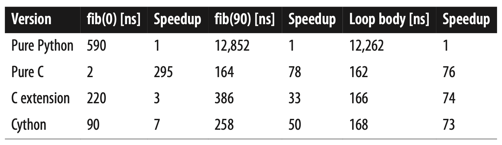
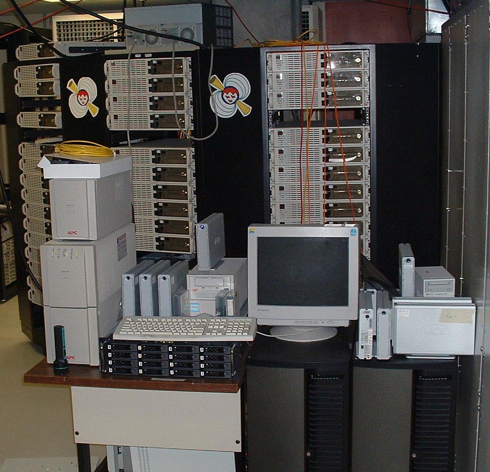

Big Data: Speeding up computation
Lviv University
Memory management
Manual
- C/C++
- Pascal
- Forth
- Fortran
- Zig
Automatic
- Lisp
- Java
- Python
- Go
- Julia
Memory management
Code
import os
import gc
import psutil
proc = psutil.Process(os.getpid())
gc.collect()
initial_memory = proc.memory_info().rss
## Allocate memory by creating large lists
foo = ['abc' for _ in range(10**7)]
allocated_memory = proc.memory_info().rss
## Deallocate memory
del foo
gc.collect()
final_memory = proc.memory_info().rssMemory management
Print memory statistics
increase = lambda x2, x1: 100.0 * (x2 - x1) / initial_memory
print("Allocated Memory Increase: %0.2f%%" % increase(allocated_memory, initial_memory))
print("Memory After Deletion: %0.2f%%" % increase(final_memory, allocated_memory))
>>> Allocated Memory Increase: 23.35%
>>> Memory After Deletion: -10.78%Memory management
Python internals
- pools
- blocks
- arenas
Memory management
Code execution
Python Options
| Libraries | Low-level langs | Alt Python Impls | JIT |
|---|---|---|---|
| NumPy, SciPy |
C, Rust, Cython, PyO3 |
PyPy, Jython |
Numba, PyPy |
Interpreters
Wikipedia definition
An interpreter is a computer program that directly executes instructions written in a programming or scripting language, without requiring them previously to have been compiled into a machine language program.
Examples
- Python
- Ruby
- Lua
- Javascript
CPython
Flow
- Read Python code
- Convert Python into bytecode
- Execute bytecode inside a VM
- VM converts bytecode to machine code
CPython
Compilers
Wikipedia definition
Source code is compiled - in this context, translated into machine code for better performance.
Examples
- C/C++
- Go
- Python (to intermediate VM code)
- Java
- Cython
Compilers

Cython
Definition
Cython is an optimising static compiler for the Python programming language.
- converts Python code to C
- supports static type declarations
Cython
Cython
Cython
Python code
Cython
Annotated Python code
Cython
Cython code
Parallel Cython
Parallel Cython
JIT
Wikipedia definition
A compilation (of computer code) during execution of a program (at run time) rather than before execution.
Features
- warm-up time: JIT causes a slight to noticeable delay in the initial execution of an application, due to the time taken to load and compile the input code.
- statistics collection: performed by the system during runtime, shows how the program is actually running in the environment it is in; helps JIT to rearrange and recompile for optimum performance.
- particularly suited for dynamic programming languages
JIT
Examples
- HotSpot Java Virtual Machine
- LuaJIT
- Numba
- PyPy
Numba
Numba
Description
- Numba translates Python byte-code to machine code immediately before execution to improve the execution speed.
- For that we add a
@jitdecorator - Works well for numeric operations, NumPy, and loops
Numba
Steps
- read the Python bytecode for a decorated function
- combine it with information about the types of the input arguments to the function
- analyze and optimize the code
- use the LLVM compiler library to generate a machine code version of the function, tailored to specific CPU capabilities.
Numba
Works great
Numba
Nope
Numba
Numpy
Why so fast?
- Optimized C code
- Densely packed arrays
- Uses BLAS - Basic Linear Algebra Subroutines.
Rust/PyO3 example
Rust/PyO3 example
Description
We show an example of a simple algebraic cipher that utilizes PyO3 bindings to speed up encoding/decoding.
Cipher definition
The basic mechanism for encrypting a message using a shared secret key is called a cipher (or encryption scheme)
Rust/PyO3 example
Definition
Encryption and decryption use the same secret key.
Examples
- AES
- Salsa20
- Twofish
- DES
Rust/PyO3 example
Types
- block ciphers
- stream ciphers
- hash functions
Rust/PyO3 example
Overview
\[ f: \mathcal{K}\times\mathcal{D} \rightarrow C \] where
- \(\mathcal{K}\) is key space
- \(\mathcal{D}\) is domain (or message space)
- \(\mathcal{C}\) is co-domain (or ciphertext space)
Rust/PyO3 example
Shannon cipher
A Shannon cipher is a pair \(\mathcal{E} = (E,D)\) of functions:
- The function \(E\) (the encryption function) takes as input a key \(k\) and message \(m\) (also called plaintext) and produces as output a ciphertext \(c):\)$ c = E(k,m) $$
\(c\) is the encryption of \(m\) under \(k\).
- The function \(D\) (the decryption function) takes as input a key \(k\) and ciphertext \(c\), and produces a message \(m\): \[ m = D(k,c) \]
\(m\) is the decryption of \(c\) under \(k\).
Rust/PyO3 example
Correctness property
For all keys \(k\) and messages \(m\), we have \[ D(k, E(k,m)) = m \]
Rust/PyO3 example
Parameters
Now we describe the cipher.
First, we define cipher parameters:
- An alphabet \(A\) with size \(L \equiv |A|\).
- A matrix \(M\) with size \(N \gg L\)
- \(\sigma_1, \sigma_2\) are some permutations \(N \rightarrow N\)
- \(\phi\) is some bit sequence of length \(P\): \(\phi \in \{0,1\}^P\)
A triple \((\sigma_1, \sigma_2, \phi)\) will be our secret key.
We define each symbol \(z\) by a corresponding set of diagonals \(D\) in the matrix \(M\), so that \(\forall (x,y) \in D: x - y = z (\mod L)\) (see Figure 1).
Rust/PyO3 example
Rust/PyO3 example
Encoder flow
Suppose we receive some text \(T\) containing symbols to be encoded.
For each \(t_i \in T\), obtain its numeric representation \(z_i\). \[ z_i \in [0,L) \] Then we map each \(z_i\) to a pair of matrix coordinates \((x_i, y_i)\) such that:
First, we pick a random \(x_i \in [0,N)\) (e.g., horizontal coordinate in a matrix)
Then, we randomly pick some \(y_i \in [0,N)\) such that: \[ x_i - y_i = z_i (\mod L) \]
Rust/PyO3 example
Encoder flow
Having thus obtained a sequence \(\{(x_i, y_i), \, i \in [0, |T|) \}\), we now apply permutations \(\sigma_k: [0,N) \rightarrow [0,N), \, k=1,2\): \[ \text{ciphertext } (\xi,\eta) := (\sigma_j(x),\sigma_{j+1}(y)) \] where \[ \sigma_j = \begin{cases} \sigma_1, \; \text{if}\; \phi_j=0,\\ \sigma_2\; \text{otherwise} \end{cases} \]
Rust/PyO3 example
Decoder flow
Below are steps executing during decoding phase:
Receive encoded ciphertext \(\{(\xi_i, \eta_i)\}\).
Apply inverse permutations \(\sigma_j^{-1}, \sigma_{j+1}^{-1}\): \[ (x_i,y_i) = (\sigma_j^{-1}(\xi_i), \sigma_{j+1}^{-1}(\eta_i)) \]
Find \(z_i\): \[ z_i = x_i - y_i \; (\mod L) \]
Rust/PyO3 example
Implementation: PyO3
- Rust bindings for Python extension modules
Users
- Qiskit https://www.ibm.com/quantum/qiskit
- Python Cryptography package https://github.com/pyca/cryptography
- Scallop https://www.scallop-lang.org
- HuggingFace Tokenizers https://github.com/huggingface/tokenizers
Rust/PyO3 example
Rust/PyO3 example
Encoding
// Generate random permutation of N integers
let mut numbers: Vec<usize> = (0..N).collect();
let mut rng = thread_rng();
numbers.shuffle(&mut rng);
let permutation = numbers;
// Generate pairs for each z
let mut pairs = Vec::with_capacity(zs.len());
for &z in &zs {
// Generate random x between 0 and N-1
let x = rng.gen_range(0..N);
// Compute y such that x - y = z (mod L)
let y = if x >= z {
(x - z) % L
} else {
((x + L) - z) % L
};
// Apply permutation to x and y
let px = permutation[x];
let py = permutation[y];
pairs.push((px, py));Rust/PyO3 example
Decoding
// Create inverse permutation
let mut inverse = vec![0; N];
for (i, &p) in permutation.iter().enumerate() {
inverse[p] = i;
}
// Recover z for each pair
let mut zs = Vec::with_capacity(pairs.len());
for &(px, py) in pairs {
// Apply inverse permutation to get x and y
let x = inverse[px];
let y = inverse[py];
// Compute z = x - y (mod L)
let z = if x >= y {
(x - y) % L
} else {
((x + L) - y) % L
};
zs.push(z);
}Rust/PyO3 example
Distributed computing
Distributed computing
Types
- Cluster computing: collection of similar workstations
- Grid computing: federation of different computer systems
- Cloud computing: provide the facilities to dynamically construct an infrastructure and compose what is needed from available services. Not only providing lots of resources.
Distributed computing
Original Beowulf cluster at NASA (1994)

Distributed computing
Beowulf cluster diagram

Distributed computing
Grid architecture diagram (Foster et al. 2001)
Notation
- fabric: interfaces to local resources at a specific site
- connectivity: communication protocols for supporting grid transactions that span the usage of multiple resources
- resource: responsible for managing a single resource
- collective: handling access to multiple resources and typically consists of services for resource discovery, allocation and scheduling of tasks onto multiple resources, data replication, and so on
- application: applications that operate within a virtual organization
Distributed computing
Cloud architecture